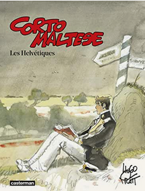

Les Helvétiques est le onzième album de la série Corto Maltese. Il est d'abord parut en Italie en 1987 sous le nom de Rosa Alchemica, puis en France la même année, cette fois sous son nom définitif, "Les Helvétiques". Hugo Pratt définit lui-même cette histoire comme "Une aventure surréaliste, [...] j'ai fait une histoire complètement farfelue, mais j'avais envie de me raconter cette fable [...]". L'album compte 87 pages. Dans certaines introductions, Pratt présente, par une série de documents et de dessins, le 26 cantons suisses, pays dans lequel se déroule l'action.
L'histoire se déroule en 1924, à Tessin, en Suisse. Corto Maltese, vivant seul dans le village de Savuit sur Lutry, dans le canton de Vaud, accepte une invitation de son vieil ami Jeremiah Steiner à se retrouver à Sion. L'album laisse une place importantes de son histoire aux légendes médiévales, un de ses sujets principaux. De nombreuses références à des légendes folkloriques européennes sont trouvables dans cet épisode, où Corto croise par-ailleurs l'écrivain Hermann Hesse, la peintre Tamara de Lempicka, et évoque sa rencontre avec Ernest B. Schoedsack à Smyrne en 1922.
